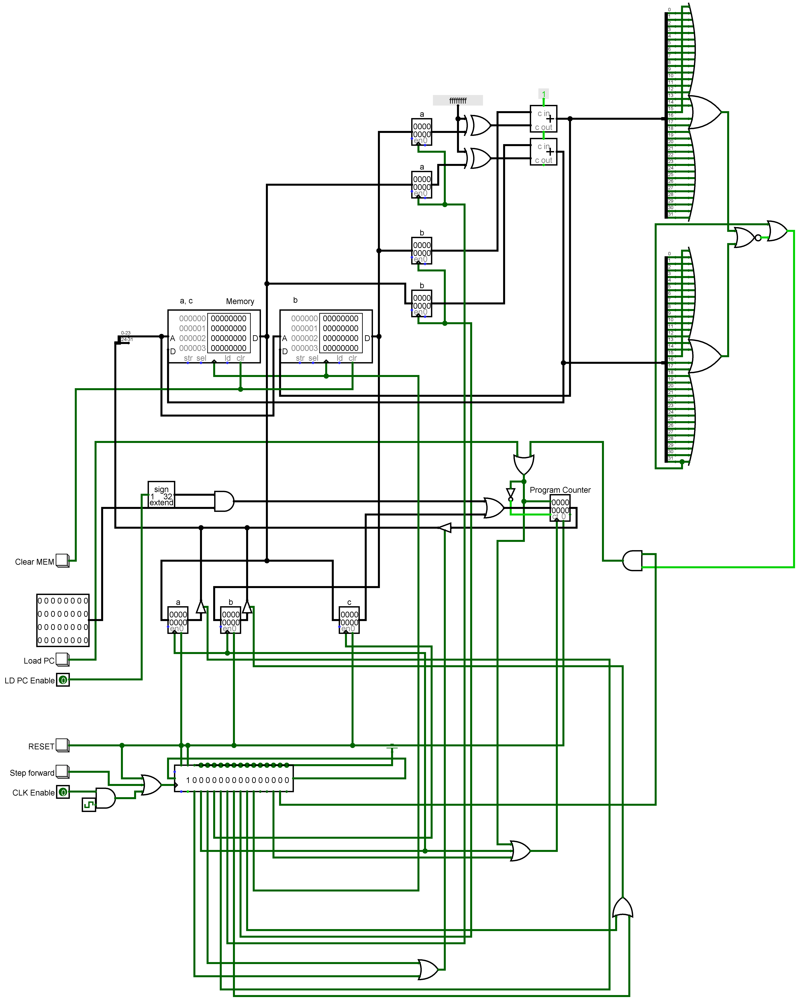

In November 2021 I designed a simple OISC - A One Instruction Set Computer.
As the name implies, an OISC has only one instruction.
Processor architectures used in modern hardware such as x86 or ARM are quite complicated
and often have hundreds of instructions ranging from add and subtract to even AES encryption.
An OISC simplifies the architecture greatly as the instruction is implied.
Why is an implied instruction useful? For starters, it greatly simplifies instruction formatting;
since there is only one instruction there is no need for an opcode - every instruction merely
contains the operands necessary for the one instruction.
Additionally, there is no need for complex decoding circuitry to determine the instruction the
processor is to perform - there is only one instruction it can execute. Thus, instead of the
traditional processor cycle of Fetch, Decode, and Execute, the OISC merely needs to fetch and execute.
Of course, there's a reason why OISCs are not used outside of novelty processors. This realization is immediately apparent to anyone who has tried to program with a single instruction. It simply takes too much work to anything. Of course, transcompilers between, say, C and an OISC can be made with not unreasonable difficulty, but the resulting code is very memory inefficient. Thus, OISCs are (perhaps unfortunately) relegated to curiosities amongst the esoteric computer architecture community.
Anyways, onto my implementation! I used Logisim to design and implement the processor.
The one instruction that it uses is subleq - subtract and branch if less than or equal to zero.more to be added later...
Last updated December 27, 2021 / Home